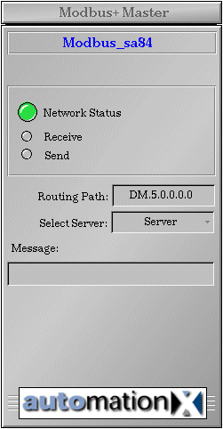
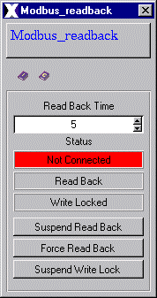

| ReadBack |
Features | Installation | User Interface | Configuration | Implementation Notes
Features
The ReadBack class is only required for applications where data is stored both on the Modbus and automationX. It's role is to maintain consistent - and current - values between the network and automationX prior to any write operation or system restart.
The ReadBack class features the following:
Features | Installation
| User Interface | Configuration
| Implementation Notes
The ReadBack class is comprised of the following
components (files):
| Class Component | Description | File Name(s) |
| Class Color File | Includes class specific color definitions. | ReadBack.color |
| Class File | Class definition file (generated by automationX); includes graphical representation, user interface, internal control logic, etc. | ReadBack.symbol |
| Graphic Files | Class Specific Graphic Files
for class operation, physical appearance and documentation. |
axclassdoku16.bmp
axinstanzdoku16.bmp ax_icon.bmp ax_iconhelp.bmp axledgreen.bmp axledgreengr.bmp axledred.bmp axledredgr.bmp axledgrey.bmp axledgreygr.bmp iconhelp.gif titlebarback.gif Address.gif DirectoryStruct.gif ReadBack.gif |
| HTML Document | HTML document for Online Help | ReadBack.htm |
| Enum File | Enumerator information for selectors | ReadBack.enum |
Features | Installation
| User Interface | Configuration
| Implementation Notes
The unique name indentifier ($Instance)
is shown on the top of the graphical representation. Below this some displays
are located.

Figure 1: Graphical representation
Instance Name
The instance name of a ReadBack object is displayed at the top of the graphical interface.
Technical Documentation
The toolbar below the Instance Name provides access to instance documentation, class documentation and the Modbus technical overview. All documents - with the exception of instance documentation - are included. All documents are available online in HTML format and run in aX's native HTML browser.
Read Back Time
The Read Back Time determines how long - in seconds - the process will stay in Read Back mode. During this time all write operations to the network will be locked. The time can be manually adjusted in the operator popup.
Network, ReadBack and Write Lock Status
The Network status indicator shows the current connection status to the Modbus Plus network - connected = green, not connected = grey. The Read Back status indicates when the system is in Read Back mode - on = green, off = grey. The Write Lock status shows when write operations are locked - locked = red, unlocked = grey.
Control display, Control buttons (operator popup)
The control buttons allow certain control over Read Back and Write Lock operations. Suspend ReadBack means to disable the Read Back mode for the duration in which the button is depressed. Note: this will override the Force ReadBack button if both are activated.
The Force ReadBack button forces the system to stay in Read Back mode - locking out any write operations to the network for the duration the button is depressed, or the Suspend ReadBack button is activated.
The Suspend Write Lock button disables the write lock operation for the duration the button is depressed - allowing write access to the Modbus from the automationX Modbus Plus client classes.

Figure 2: Operator popup
In the operator popup the
documentation can also be opened.
Features | Installation
| User Interface | Configuration
| Implementation Notes
Hardware
Ensure proper installation of the Modicon SA85 card. Consult technical documentation provided by Modicon for detailed installation instructions.
Modicon Distribution Software
The SA85 device includes a set of software programs required for proper installation. These include devices drivers, setup programs, a library of C functions for Modicon's NetBIOS implementation, a diagnostic utility and sample programs for addressing and data transfers.
automationX Distribution Software
The aX Modbus Plus class set includes driver & application software - two files - located in the "automationX/bin" directory:
Troubleshooting
Please see Troubleshooting in the
Modbus Plus Overview if problems are encountered.
Features | Installation
| User Interface | Configuration
| Implementation Notes
Declaring an Instance Name
Declare an instance name - in the Instance field - for the ReadBack object.
Network Validation
The ReadBack class checks for a valid network connection via the ConnBroken and IN1-IN15 variables. The logic for this operation is built in the class.
The variables IN1-IN15 are connected to the "Busy" variable in the Modbus_Coil, Modbus_Register or Modbus_Float classes. Up to 15 Modbus clients can be configured per ReadBack class. The link is made in the Reference field of the IN1-IN15 variable using the addressing standard:
instance_name.Busy
Where instance_name is the instance name of a Modbus client.
The ConnBroken variable is directly linked to the MB_Error variable in the ModbusSA85 Master class using the addressing standard:
instance_name.MB_Error
Where instance_name
is
the instance name of a Modbus master.
Linking ReadBack status to the Modbus Clients
A Modbus client receives a Read Back signal - from
the ReadBack class - to it's ReadBack variable. This must be implemented
via separate function block logic during project configuration.
This example shows a ReadBack bit being written to Modbus_Coil class with the instance name "Coil1".
Locking Modbus Client Communication During a Read Back
When a Read Back is activated, all data write operations - for the modbus clients - must be paused. This is accomplished by linking the ComLock variable (in the ReadBack class) to the ComLock variable in the Modbus client using external function block logic.
This example shows a ComLock bit being written to Modbus_Coil class with the instance name "Coil1".
Modbus Plus SPS Code (Data Safety)
In the event of a system wide shut-down or error on the network, the ReadBack class provides a safety mechanism to avoid retentive data from being lost.
The SPSCODE variable can be given a certain value, assigned to a Modbus Plus client, and written to the network. During a re-start, the client reads the value from the network and compares it to the original value. If the network value has changed - e.g. been lost during the shut-down - a Read Back will not happen. Instead, the values retained by automationX will be written back to the network, restoring the correct data.
EXAMPLE
Configure two Modbus Plus clients - one set to "Write", the other to "Read". The first client writes the SPS code to a specific register on the network - the variable SPSCODE assigned via function block logic. Use the DATA SET function to check that the write lock operation (ComLock variable) is not active.
The second client reads the SPSCODE back from the network and compares it to the original value in the ReadBack class. The result determines the state of the CODE_OK variable.
Alternatively, a single Modbus Plus client - set to "Async" - could be used to read and write the SPSCODE.
Inside the ReadBack class, both the "CODE_OK" variable and "toReadBack" variable must be true for a Read Back to take place.
Note: The FB logic shown with a dark grey background indicates programming outside the ReadBack class. The FB logic shown with a tan background indicates existing programming within the ReadBack class.
Features | Installation | User Interface | Configuration | Implementation Notes